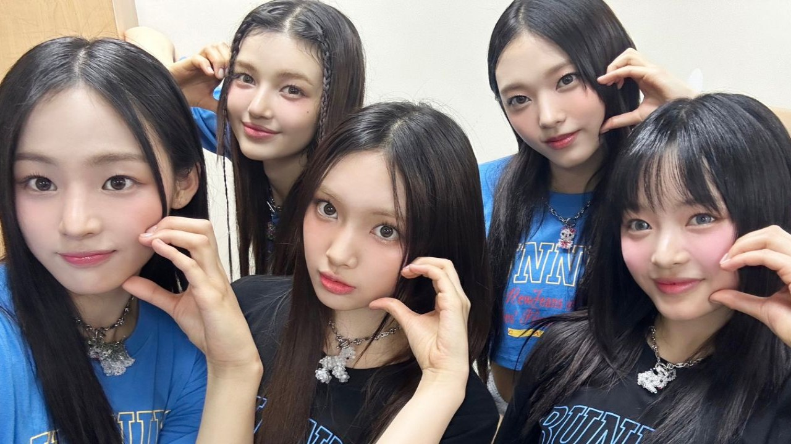
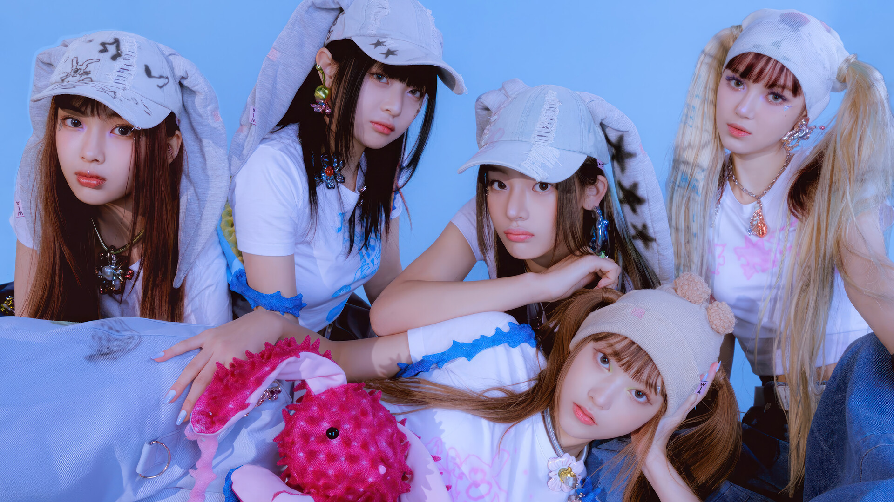

ABOUT NEWJEANS
NewJeans is a groundbreaking K-pop girl group known for their innovative sound, unique fashion, and refreshing approach to the genre. Formed by ADOR, a subsidiary of HYBE Corporation, NewJeans made their debut in 2022 and quickly became a sensation in the global music scene. Their ability to blend diverse musical styles and deliver captivating performances has earned them a devoted fan base and critical acclaim.
NewJeans burst onto the scene with their debut EP, "New Jeans," featuring hit singles that showcased their innovative approach to K-pop. The EP was praised for its catchy melodies, relatable lyrics, and seamless blend of pop, R&B, and electronic elements. Tracks like "Attention" and "Hype Boy" became instant favorites, earning NewJeans a place on global music charts.
Following their debut, NewJeans continued to release music that pushed creative boundaries and resonated with listeners worldwide. Their sophomore EP, "OMG," further solidified their reputation as trendsetters in the industry. Songs like "Ditto" and "OMG" highlight their ability to evolve while staying true to their signature style.
Since their debut, NewJeans has achieved remarkable success, earning numerous awards and accolades for their music and performances. They have been recognized for their impact on the global music scene and their ability to connect with audiences across cultures. The group's fan base, affectionately known as "Bunnies," continues to grow, driven by their genuine artistry and engaging personalities.
Beyond their music, NewJeans is known for their trendsetting fashion and visual concepts. Their unique and contemporary styles have inspired fans and fashion enthusiasts alike, establishing them as icons in the industry. Collaborations with renowned designers and brands have further amplified their influence in the fashion world.
FUTURE FOR THE GROUP
Looking ahead, NewJeans is committed to exploring new creative directions and expanding their horizons. They aim to continue breaking boundaries and redefining what it means to be a K-pop group. With a focus on innovation and authenticity, NewJeans is poised to leave a lasting legacy in the music industry and inspire future generations of artists.